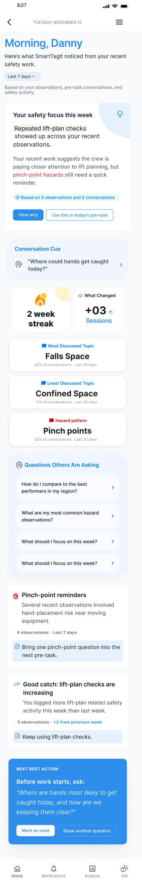

FactorLab · SmartTagIt / INFORMATION DESIGN · AI FEEDBACK
Make feedback useful before making it a score.
Shaping a personal insights experience that connects summaries, comparisons, and recommendations to a useful next action.


THE PROBLEM
What needed to become clearer?
SmartTagIt has rich information about safety conversations and activity. A personal insights page needs to turn that information into something people can interpret, without suggesting that every higher number is automatically better.
MY CONTRIBUTION
From an open question to a design decision.
I explored the About Me information model, widget families, different content densities, and ways to connect a summary to the evidence and the next action. The work made product questions visible before they became fixed interface rules.
DECISION 01
Start with meaning, then let people inspect the detail.
The early direction starts with a short personal summary. I explored how to connect it to supporting observations and conversations, so people could inspect the basis for a recommendation and decide what to do next.

DECISION 02
Organize widgets around different questions.
I grouped the content into five families: summaries, recommendations, Simple 7, comparisons, and accomplishments. Exploring different widget sizes helped us discuss what belonged together and how much detail to show. Customization was still an open scope question.
DECISION 03
Describe the comparison without making the judgment.
Mentioning fatigue less often than peers is a comparison. Whether that is good depends on the context. I argued for neutral feedback that leaves the judgment with the person, and questioned which peers were being compared and what each number meant.
OUTCOME & REFLECTION
Concrete layouts for a personal insights experience.
The design work gave the team a family of insight layouts to review alongside questions about the comparisons, their sources, and useful next actions. About Me’s web and server changes were released on September 2, 2026.
A polished chart can hide an unresolved product question. Defining the comparison, its source, and how people should interpret it belongs in the design work from the start.
The next question I would test
I would ask people to explain a comparison in their own words, find what it is based on, and describe a useful next action.
Original Figma designs and April–May 2026 walkthroughs, with a September release update. Screens show design iterations with sample content; the exact released layout is unverified.